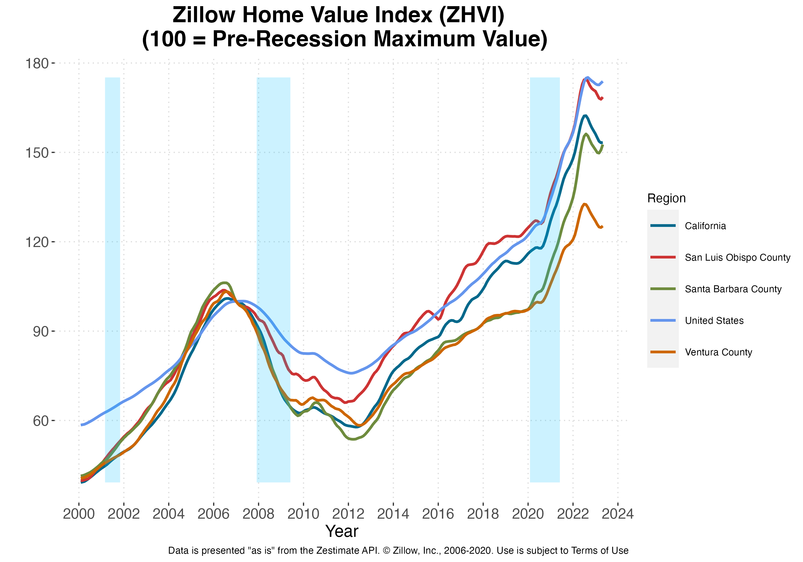
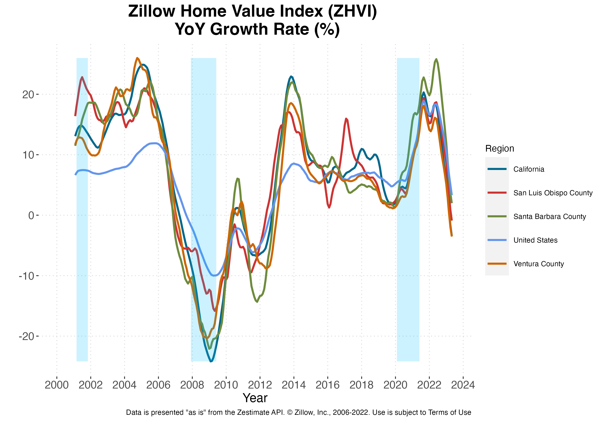

5 Real Estate
5.1 Residential
Real Estate Residential Real Estate Key Points:
- YoY growth in Santa Barbara County median home values experienced a U-shaped dip throughout 2019 and have since returned to values implied by its secular trend.
- The Santa Barbara County Housing Affordability Index fell from 11% to 10% over the past year and sits below the average for all of California.
- The real median home price for Santa Barbara County fell by -28.1% between March 2022 and March 2024 compared to a -7.5% drop increase in California.
- Residential building activity fell from 1,069 to 408 permitted units in 2020.
Santa Barbara County’s housing market continued its growth in terms of home values compared to last year, albeit at a slower rate. From April 2022 to April 2023, the Zillow Home Value Index, an estimate of the median home value, for Santa Barbara County increased from $150 to $153, a 1.98% change. This is down from the prior year’s growth in home values of 25.34%. The median home price in Santa Barbara County as of April 2023 surpassed its pre-recession high of $106 in June 2006. Median prices in both the overall US and California have remained above their pre-recession peaks. None of these geographies experienced gains in Year over Year (YoY) growth rates of home values relative to this time last year. . 2019 also saw a large dip in home value growth beginning in March, reaching a minimum between July and September depending on the region under consideration. Growth and home values have since rebounded. Following the recovery in home value growth rates, i.e. since 2013, YoY growth of Santa Barbara County home values reached a minimum of 1.34% in December 2019. Neighboring San Louis Obispo County has fared worse, reaching a minimum of -0.89% in April 2023. Of particular interest is that, while the United States as a whole also experienced a dip of sorts throughout 2019, the decline and subsequent rebound in YoY growth is most dramatic for California. Given the size of California, and the relative value of its housing market, the 2019 decline in California’s YoY growth may be a large contributing to factor to the apparent nationwide dip during that time period.



Zillow’s for-sale inventories data series is no longer available for Santa Barbara County. We have included our previous discussion of this data while we work to instead incorporate home transfer data from the Santa Barbara County Recorder’s Office. Inventories, calculated as the estimated number of median homes for sale in a given region, decreased across all three geographies (Santa Barbara County, California, and the US) following last year’s rebound. Santa Barbara experienced a decline in inventories from a peak of 939 in January 2019 to 614 in March 2020. California saw an even larger decrease in levels, from a peak of 78,265 in December 2018 to 58,293 in March 2020, though the decline in Santa Barbara County was larger in relative terms. This dip in inventories across the United States, while still present, is much smaller than that in both California and Santa Barbara County housing markets and appears to be a return to the Country’s secular trend in inventories beginning in 2013. Take note of the fact that declining inventories could be due to one or more of many different supply and demand forces, and how efficiently real estate markets match buyers with sellers. The health of local housing markets depends crucially on the source of the change in inventories and not simply the stock of inventories itself.
Affordability
The Housing Affordability Index from the California Association of Realtors gives the percentage of households in California counties that can afford to purchase the median-priced house in their respective areas. Nationally, 35% of United States residents could afford the median-priced house in the country during 2023Q4, an increase of 0.79 percentage points from last quarter and a decrease of -3.04 percentage points relative to last year. California’s Housing Affordability Index is lower than the national average, with 14.66% of California residents being able to afford the median-priced house in the state. Santa Barbara County also falls below the national average, with an index of 0%. This constitutes a a decrease from last quarter’s index of 10% and a decline from last year, when 11% of residents could afford the median-priced house. Moreover, Santa Barbara County is now ranked the 27 out of 29 counties displayed below and 48 out of 51 counties for which data is available.
Housing Prices and Sales
Home Price data from the California Association of Realtors shows that real median home price for Santa Barbara County decreased by -28.1% between March 2022 and March 2024. This compares to a -7.5% drop in real prices for California and a -5.1% fall for Los Angeles County. When looking separately at the North and South Coast of Santa Barbara County, median home prices in the South Coast fell by -2.5% whereas the median home price in North County fell by -12.6%.
| California | ||||||
| Median Home Price | 565,880 | 612,440 | 758,990 | 851,130 | 793,260 | 854,490 |
| Median Home Price ($2009) | 451,839 | 480,908 | 473,036 | 504,178 | 608,807 | 629,143 |
| percent change | 4.6% | 6.4% | -1.6% | 6.6% | 20.8% | 3.3% |
| Los Angeles County | ||||||
| Median Home Price | 525,520 | 567,910 | 668,220 | 781,050 | 718,370 | 805,100 |
| Median Home Price ($2009) | 405,845 | 450,384 | 439,298 | 467,520 | 535,998 | 577,340 |
| percent change | 2.9% | 11.0% | -2.5% | 6.4% | 14.6% | 7.7% |
| Ventura County | ||||||
| Median Home Price | 640,000 | 705,000 | 770,750 | 914,000 | 849,000 | 918,040 |
| Median Home Price ($2009) | 546,284 | 543,632 | 534,995 | 580,376 | 618,240 | 675,615 |
| percent change | -1.3% | -0.5% | -1.6% | 8.5% | 6.5% | 9.3% |
| Santa Barbara County | ||||||
| Median Home Price | 555,000 | 645,000 | 1,075,000 | 1,300,000 | 769,000 | 1,015,000 |
| Median Home Price ($2009) | 705,726 | 532,138 | 463,941 | 530,982 | 862,288 | 960,941 |
| percent change | 39.0% | -24.6% | -12.8% | 14.5% | 62.4% | 11.4% |
| South Coast | ||||||
| Median Home Price | 1,225,000 | 1,300,000 | 1,561,000 | 802,500 | 765,000 | 850,000 |
| Median Home Price ($2009) | 1,267,292 | 1,170,703 | 1,024,014 | 1,070,197 | 1,252,122 | 593,196 |
| percent change | 14.4% | -7.6% | -12.5% | 4.5% | 17.0% | -52.6% |
| North Coast | ||||||
| Median Home Price | 419,950 | 475,000 | 545,000 | 395,000 | 355,000 | 374,950 |
| Median Home Price ($2009) | 368,110 | 391,900 | 351,049 | 391,033 | 437,160 | 291,978 |
| percent change | 10.1% | 6.5% | -10.4% | 11.4% | 11.8% | -33.2% |
| San Luis Obispo County | ||||||
| Median Home Price | 629,500 | 619,000 | 737,500 | 903,000 | 895,000 | 850,000 |
| Median Home Price ($2009) | 477,019 | 519,367 | 526,218 | 509,578 | 591,570 | 667,484 |
| percent change | -2.8% | 8.9% | 1.3% | -3.2% | 16.1% | 12.8% |
| Source: California Association of Realtors |
Sales Price vs. List Price
When comparing list prices and sales prices, the median sales price for single family homes is close to the median list price throughout Santa Barbara County. In 2007, no areas in Santa Barbara City and Goleta sold homes at a discount. Instead, SB/East of State, SB/Gol North, SB/Gol South, and SB/West of State sold single family homes at a premium. The differences in list and sale prices may be indicative of the relative bargaining power of buyers and sellers in each region. Throughout the County, the lowest sale to list price was 117% in SB/West of State. List prices vary significantly between regions, with Hope Ranch being the most expensive and SB/Gol South being the least expensive. Median list prices for these two geographies are $3,955,625 and $876,917, respectively.
SB South Coast: Single Family Home Listings, Sales and Prices
Montecito experienced the largest level change in its median sale price, which rose in 2021 from $3,497,187 to $5,005,005. This brings its median home price back in line with historic prices after stark rise in 2018. This level change also represents the largest percentage change in median home prices, adjusting by 43.12%. Santa Barbara North County had the most stable prices in percentage terms with median home prices increasing by 5.07% between 2020 and 2021. In terms of mean home prices, Montecito experienced the largest change: average prices rose from $4,484,542 to $6,433,806. Given that the median price saw a very small decline, it is likely the case that a small number of high value sales is skewing the average for the Montecito area.
| Santa Barbara South Coast | ||||||
| Listings (# of homes) | 920 | 1,070 | 1,113 | 1,036 | 1,315 | 1,078 |
| Sales (# of homes) | 1,091 | 1,154 | 1,051 | 1,130 | 1,304 | 1,301 |
| Median Price (dollars) | 1,173,000 | 1,275,000 | 1,250,000 | 1,311,500 | 1,570,858 | 1,945,000 |
| Average Price (dollars) | 1,676,690 | 1,780,764 | 1,786,067 | 2,068,250 | 2,347,555 | 3,125,788 |
| Carpinteria / Summerland | ||||||
| Listings (# of homes) | 87 | 74 | 96 | 69 | 95 | 73 |
| Sales (# of homes) | 83 | 91 | 78 | 89 | 95 | 90 |
| Median Price (dollars) | 910,000 | 1,040,000 | 1,161,900 | 1,150,000 | 1,245,000 | 1,751,902 |
| Average Price (dollars) | 1,486,595 | 1,961,527 | 1,496,391 | 2,936,219 | 2,042,559 | 3,117,301 |
| Montecito | ||||||
| Listings (# of homes) | 161 | 135 | 144 | 172 | 298 | 202 |
| Sales (# of homes) | 172 | 177 | 126 | 186 | 304 | 269 |
| Median Price (dollars) | 2,764,211 | 2,949,500 | 2,775,000 | 3,091,999 | 3,497,187 | 5,005,005 |
| Average Price (dollars) | 3,578,981 | 3,474,819 | 3,863,691 | 4,116,063 | 4,484,542 | 6,433,806 |
| Santa Barbara East of State Street | ||||||
| Listings (# of homes) | 352 | 252 | 316 | 259 | 340 | 295 |
| Sales (# of homes) | 327 | 324 | 304 | 287 | 332 | 351 |
| Median Price (dollars) | 1,250,000 | 1,350,000 | 1,322,500 | 1,389,100 | 1,566,500 | 1,900,000 |
| Average Price (dollars) | 1,476,545 | 1,545,952 | 1,525,904 | 1,576,984 | 1,757,462 | 2,197,372 |
| Santa Barbara West of State Street | ||||||
| Listings (# of homes) | 210 | 203 | 241 | 233 | 244 | 217 |
| Sales (# of homes) | 206 | 233 | 232 | 242 | 247 | 244 |
| Median Price (dollars) | 1,059,500 | 1,150,000 | 1,175,000 | 1,180,000 | 1,300,000 | 1,585,000 |
| Average Price (dollars) | 1,221,747 | 1,247,937 | 1,406,072 | 1,389,480 | 1,474,577 | 1,927,272 |
| Hope Ranch | ||||||
| Listings (# of homes) | 28 | 17 | 30 | 28 | 50 | 39 |
| Sales (# of homes) | 21 | 31 | 36 | 36 | 43 | 57 |
| Median Price (dollars) | 2,850,000 | 2,800,000 | 3,722,500 | 2,974,000 | 3,400,000 | 4,750,000 |
| Average Price (dollars) | 3,336,429 | 3,777,974 | 4,989,922 | 4,569,611 | 4,093,869 | 5,955,943 |
| Goleta North of Highway 101 | ||||||
| Listings (# of homes) | 189 | 170 | 200 | 195 | 196 | 183 |
| Sales (# of homes) | 179 | 201 | 199 | 204 | 192 | 212 |
| Median Price (dollars) | 905,000 | 979,000 | 965,000 | 1,104,600 | 1,127,000 | 1,352,500 |
| Average Price (dollars) | 1,052,005 | 1,260,263 | 1,131,672 | 1,329,342 | 1,401,672 | 1,712,853 |
| Goleta South of Highway 101 | ||||||
| Listings (# of homes) | 101 | 84 | 86 | 80 | 92 | 69 |
| Sales (# of homes) | 106 | 97 | 76 | 86 | 91 | 78 |
| Median Price (dollars) | 845,000 | 870,000 | 900,250 | 899,375 | 1,045,000 | 1,222,500 |
| Average Price (dollars) | 960,779 | 1,024,454 | 1,035,380 | 996,059 | 1,222,576 | 1,426,338 |
| Santa Ynez | ||||||
| Listings (# of homes) | 150 | 221 | 155 | 215 | 227 | 219 |
| Sales (# of homes) | 171 | 230 | 199 | 207 | 252 | 233 |
| Median Price (dollars) | 739,900 | 807,000 | 865,000 | 855,000 | 975,000 | 1,250,000 |
| Average Price (dollars) | 1,017,798 | 1,217,425 | 1,182,252 | 1,144,831 | 1,459,110 | 1,620,442 |
| Santa Maria | ||||||
| Listings (# of homes) | 25 | 21 | 33 | 30 | 31 | 37 |
| Sales (# of homes) | 26 | 24 | 30 | 27 | 35 | 34 |
| Median Price (dollars) | 371,000 | 397,450 | 397,450 | 420,000 | 440,000 | 517,500 |
| Average Price (dollars) | 396,139 | 422,036 | 408,246 | 448,000 | 464,700 | 530,613 |
| Lompoc | ||||||
| Listings (# of homes) | 52 | 72 | 83 | 106 | 93 | 130 |
| Sales (# of homes) | 60 | 66 | 82 | 108 | 101 | 129 |
| Median Price (dollars) | 351,450 | 350,000 | 380,500 | 384,950 | 431,000 | 505,000 |
| Average Price (dollars) | 389,673 | 393,719 | 422,348 | 432,547 | 476,716 | 555,407 |
| Santa Barbara North County | ||||||
| Listings (# of homes) | 227 | 314 | 271 | 351 | 351 | 386 |
| Sales (# of homes) | 257 | 320 | 311 | 342 | 388 | 396 |
| Median Price (dollars) | 574,250 | 665,500 | 75,000 | 595,000 | 690,000 | 725,000 |
| Average Price (dollars) | 741,891 | 972,759 | 846,181 | 788,108 | 1,061,690 | 1,076,406 |
| Source: Santa Barbara Association of Realtors Multiple Listing Service |
Santa Barbara and Goleta: Condominium Listings, Sales and Prices
The Santa Barbara and Goleta condominium price data from the Santa Barbara Association of Realtors Multiple Listing Services shows that Santa Barbara - East of State Street and Goleta - North of Highway 101, Santa Barbara - West of State Street and Goleta - North of Highway 101 experienced an increase in median condo prices. Moreover, Santa Barbara - East of State Street, Goleta - North of Highway 101 saw an increase in the number of listings. Between both Santa Barbara and Goleta, net listings–listings minus sales–decreased by 48.
| Santa Barbara - East of State Street | ||||||
| Listings (# of condos) | 87 | 107 | 96 | 92 | 100 | 117 |
| Sales (# of condos) | 83 | 120 | 106 | 99 | 104 | 114 |
| Median Price (dollars) | 640,000 | 637,350 | 682,500 | 700,000 | 724,000 | 802,500 |
| Average Price (dollars) | 763,524 | 790,138 | 763,193 | 832,505 | 872,075 | 913,111 |
| Santa Barbara - West of State Street | ||||||
| Listings (# of condos) | 126 | 112 | 114 | 101 | 115 | 87 |
| Sales (# of condos) | 128 | 125 | 100 | 124 | 107 | 102 |
| Median Price (dollars) | 644,000 | 635,000 | 677,000 | 694,000 | 700,000 | 732,500 |
| Average Price (dollars) | 775,699 | 734,048 | 809,983 | 777,313 | 796,962 | 832,826 |
| Goleta - North of Highway 101 | ||||||
| Listings (# of condos) | 58 | 97 | 62 | 48 | 65 | 75 |
| Sales (# of condos) | 59 | 102 | 57 | 58 | 61 | 81 |
| Median Price (dollars) | 455,000 | 565,000 | 579,000 | 563,000 | 572,000 | 606,000 |
| Average Price (dollars) | 462,764 | 638,660 | 592,215 | 583,125 | 641,854 | 676,453 |
| Goleta - South of Highway 101 | ||||||
| Listings (# of condos) | 99 | 90 | 90 | 60 | 109 | 73 |
| Sales (# of condos) | 100 | 98 | 79 | 75 | 102 | 88 |
| Median Price (dollars) | 544,250 | 522,500 | 500,000 | 565,000 | 670,000 | 659,495 |
| Average Price (dollars) | 582,572 | 608,565 | 542,359 | 579,503 | 670,508 | 652,994 |
| Source: Santa Barbara Association of Realtors Multiple Listing Service |
Housing Permits
In Santa Barbara County, total residential unit permits decreased from 1,069 to 408 between 2019 and 2020. Both single family unit permits and multi-family unit permits decreased from 609 to 317 and 460 to 91, respectively. Moreover, the share of multi-family permits declined from 43.03% to 22.3%. The total value of residential building permits fell from $131.7 million to $116.3.
| Carpinteria | |||||||
| Total Residential Units Permitted | 2 | 5 | 0 | 0 | 0 | 5 | 0 |
| Single Family Units Permitted | 2 | 5 | 0 | 0 | 0 | 5 | 0 |
| Multiple Family Units Permitted | 0 | 0 | 0 | 0 | 0 | 0 | 0 |
| Residential Building Value (millions $) | 0.4 | 1.8 | 0.0 | 1.3 | 0.6 | 1.2 | 2.3 |
| Guadalupe | |||||||
| Total Residential Units Permitted | 0 | 0 | 0 | 76 | 81 | 98 | 0 |
| Single Family Units Permitted | 0 | 0 | 0 | 76 | 43 | 86 | 0 |
| Multiple Family Units Permitted | 0 | 0 | 0 | 0 | 38 | 12 | 0 |
| Residential Building Value (millions $) | 0.0 | 0.0 | 0.0 | 0.0 | 12.9 | 0.3 | 0.0 |
| Lompoc | |||||||
| Total Residential Units Permitted | 42 | 30 | 6 | 1 | 3 | 3 | 20 |
| Single Family Units Permitted | 23 | 30 | 3 | 1 | 3 | 3 | 18 |
| Multiple Family Units Permitted | 19 | 0 | 3 | 0 | 0 | 0 | 2 |
| Residential Building Value (millions $) | 6.3 | 6.5 | 0.6 | 1.0 | 1.9 | 2.7 | 0.6 |
| Santa Barbara | |||||||
| Total Residential Units Permitted | 12 | 176 | 224 | 86 | 120 | 29 | 49 |
| Single Family Units Permitted | 12 | 20 | 28 | 43 | 63 | 27 | 39 |
| Multiple Family Units Permitted | 0 | 156 | 196 | 24 | 57 | 2 | 10 |
| Residential Building Value (millions $) | 11.9 | 14.5 | 21.2 | 36.2 | 39.9 | 31.4 | 34.7 |
| Santa Maria | |||||||
| Total Residential Units Permitted | 344 | 432 | 503 | 648 | 212 | 321 | 136 |
| Single Family Units Permitted | 130 | 154 | 3 | 324 | 124 | 26 | 70 |
| Multiple Family Units Permitted | 214 | 278 | 310 | 198 | 88 | 295 | 66 |
| Residential Building Value (millions $) | 52.2 | 41.5 | 50.9 | 4.4 | 2.9 | 3.7 | 6.8 |
| Santa Barbara County | |||||||
| Total Residential Units Permitted | 898 | 1,047 | 971 | 1,310 | 846 | 1,069 | 408 |
| Single Family Units Permitted | 348 | 353 | 334 | 655 | 479 | 609 | 317 |
| Multiple Family Units Permitted | 550 | 694 | 637 | 576 | 367 | 460 | 91 |
| Residential Building Value (millions $) | 194.7 | 131.4 | 128.1 | 105.9 | 111.3 | 131.7 | 116.3 |
| Source: Construction Industry Research Board | |||||||
| Source: Construction Industry Research Board |
Santa Barbara County South Coast Apartment Rental Market
Guest Author: Dawn Dyer
Dyer-Sheehan Group
In preparation.
—
5.2 Commercial
Hayes Commercial Group
South Coast Commercial Real Estate – 2022 Q1 Market Report
Guest Authors: Hayes Commercial Group
HIGHLIGHTS
● Heavy commercial sales activity produced the highest volume on record for a first quarter, a continuation of unprecedented sales in 2021. ● The inventory of property for sale is at a five-year low; however, demand remains high and off-market sales are prevalent. ● Santa Barbara’s office market is still near peak supply, including an overextended inventory of large spaces. ● Goleta’s office vacancy is near the historical low, but most of the transactions to date were renewals, and much of the inventory is stagnant. ● State Street’s retail vacancy seems to be stuck in double digits, while the Funk Zone and Coast Village Road have very low availability.
Table 1

COMMERCIAL SALES - Full steam ahead!
The momentum that produced record sales volume in 2021 carried into the new year, as Q1 generated 29 South Coast sales totaling $151 million (excluding hotels), both record values for a first quarter. On top of that, hotel sales topped $64 million. This presents a stark contrast to the previous two years, which both started slowly with relatively constricted deal flow in the first quarter.
In 2021, most of the surplus volume was in sales of Santa Barbara property; however, during Q1 the action shifted to Goleta where 10 sales and $95 million of non-hotel volume traded, nearly triple the average quarterly production. By contrast, sales activity in Santa Barbara was level with historical averages, and Carpinteria saw just one sale of $1.2 million.
Among Goleta’s sales, two off-market transactions were especially notable in terms of size and price. In January, the 72,000 SF class A office building at 6500 Hollister Ave was purchased by an investor for $21 million. More recently, the six-building industrial/R&D campus on 11.9 acres at 315-346 Bollay Dr & 320-340 Storke Rd was purchased by Majestic Asset Management for $50.6 million. By our count, it’s the fourth highest price ever recorded for a commercial (non-hotel) property on the South Coast. This sale affirms Majestic’s role as the most prominent value-add management firm on the South Coast, having completed five major acquisitions in as many years, totaling 750,000 SF.
Hospitality property sales continued apace in Q1. The 158-key Kimpton Goodland Hotel at 5650 Calle Real in Goleta traded hands for $33 million. The buyer is reportedly a New York-based team specializing in “distressed” hospitality assets, and the price was well below what the seller had paid for the property in 2015. There were also two notable hotel sales in Santa Barbara: local developer Ed St. George purchased the 53-key Franciscan Inn at 109 Bath St for $21 million; and the Quality Inn at 3055 De La Vina St was purchased by a local investor for $9.7 million at the close of the quarter.
In Santa Barbara, a bizarre sequence led to the former Girls Inc property at 531 E Ortega St changing ownership twice within a matter of days. The 1.5-acre property was purchased by a local developer planning to build multifamily housing. However, the City reportedly wasn’t receptive to the scale of the project, and five days after taking ownership the developer sold the property to Providence School for its own use. In another owner-user purchase, a dental practice purchased the 8,416 SF retail/office building at 331 N Milpas St in order to occupy part of the building and lease the remainder. Despite these examples of owner-user sales, three quarters of the buyers in Santa Barbara were investors. Most notably, the 10,600 SF office building at 118 E Carrillo St was purchased by a 1031 Exchange investor for $7.5 million in an off-market transaction. For the South Coast as a whole, owner-users completed 31% of transactions, which is a decrease from the historical trend.
With just 43 properties on the market for sale, inventory is at its lowest level in five years. However, due to strong demand, 55% of Q1 sales were off-market, and many properties are going under contract either before they make it to market or within a few weeks of doing so. The Fed’s interest rate increases haven’t dampened demand, so far. A relatively large proportion of buyers on the South Coast don’t require financing because they can pay cash or are funded by a 1031 Exchange, so our market is less impacted than most by rising interest rates. At the same time, the root cause of rising interest rates—inflation—may also be driving demand among investors, as real estate is widely heralded as a hedge against inflation. For all these reasons, in the coming quarters we are likely to see sustained demand and sales volume despite relatively low inventory.
 Lockheed Martin has been a longtime tenant at 346 Bollay Dr at the 195,000 SF industrial/flex campus in Goleta, sold for $50.6 million.
Lockheed Martin has been a longtime tenant at 346 Bollay Dr at the 195,000 SF industrial/flex campus in Goleta, sold for $50.6 million.
OFFICE LEASING
Santa Barbara’s office market continues to grapple with surplus inventory. There are 90 spaces available, and vacancy rate has been above 9% for five consecutive quarters (refer to Table 1). The biggest lease in Q1 was UCLA Health’s signing of the entire 21,900 SF building at 111 E Victoria St for a 10-year term. Also of note, Mercer Advisors leased the 6,200 SF top floor of 222 E Carrillo St, and 5,000 SF at 28 W Figueroa St was leased by Bungalo805, the forthcoming lounge/club for kids and their parents.
Marketing for the office conversion of the former Nordstrom building at 651 Paseo Nuevo is expected to launch in Q2. As with the Ortega Building at the other end of Paseo Nuevo, the offering will consist of newly remodeled floor plates for large tenants. There have reportedly been multiple parties interested in the Ortega Building since marketing commenced a year ago, but no deals have been signed to date. Given current sparse demand in the market, finding tenants for these buildings is likely to take considerable time.
Taking a closer look at Santa Barbara’s elevated vacancy, we see that larger office spaces represent a disproportionate share of the growth in inventory during the current cycle. Seven years ago, Santa Barbara’s office market reached a cyclical low of 45 available spaces. Since then the number of available spaces has doubled, while the number of spaces larger than 5,000 SF has tripled to 31 currently available. For reference, 5,000 SF can accommodate roughly 30 office workers. Given average leasing volume over the past five years, Santa Barbara is carrying almost three years’ worth of inventory in this 5,000-plus SF range. By contrast, the available spaces smaller than 5,000 square feet represent less than one year’s worth of inventory. In other words, conditions do not seem to favor bringing new large spaces to the market.
Goleta’s office vacancy continues to trace the opposite trajectory compared to Santa Barbara. The rate is below 5% for the first time since before the pandemic and is near the historical low (refer to Table 1). Demand is relatively healthy but appears to be fickle, and aside from renewals, deal flow was very limited in Q1. UCSB subleased 10,800 SF at 420 S Fairview Ave, which is about half of the space that Sientra relinquished for sublease there; the other half is still on the market. Other than that, the transactions were dominated by renewals, including Raytheon’s securing of 15,000 SF at 115 Robin Hill Rd and Reaction 35’s renewal of 10,250 SF at 861 Ward Dr. There are a few small spaces newly on the market, but the spaces above 5,000 SF have been available for 487 days on average, most of which have older finishes or class B features contributing to their lingering on the market. Newly remodeled spaces are leasing more readily.
In Carpinteria, there were no office transactions signed in Q1. The vacancy rate popped into double digits with the emergence of two large availabilities. First, Procore offered for sublease the second floor of 6267 Carpinteria Ave—25,000 SF of creative office on the bluff. Second, three spaces totaling 19,398 SF are available at 1013-1017 Mark Ave, much of which is office conversion of former warehouse space at a bargain rate. After successfully building and leasing four new flex buildings in Goleta, RAF Pacifica Group is proceeding with plans to construct a new 80,000 SF office building at 6380 Via Real in Carpinteria for delivery in late 2023. Given current market conditions, it may prove that new office space in Carpinteria is a bit harder to lease than new flex space in Goleta, but time will tell.
 UCLA Health leased 111 E Victoria St, a 21,900 SF building in downtown Santa Barbara.
UCLA Health leased 111 E Victoria St, a 21,900 SF building in downtown Santa Barbara.
RETAIL LEASING
Santa Barbara’s largest retail lease to date occurred on Upper State Street, where the lower level of the former Sears building at 3845 State St was leased by Mattress Mike’s Furniture Gallery. Approximately 20% of this 72,750 SF space was subleased to Moving Miss Daisy consignment and antiques. The 76,300 SF upper floor is still for lease. Downtown State Street’s vacancy remains elevated, with 14.7% of storefronts on the 400 to 1300 blocks available and/or vacant. This “storefront vacancy” has been in double digits for four years, which has to be accepted now as the new normal. Returning to the 6-8% vacancy range would require a number of spaces to be repurposed for non-retail use and/or a substantial change in consumer behavior in the downtown corridor, neither of which are evident in the near horizon but could be brought about over time. In addition to the sheer number of storefronts, it bears noting that many of the vacancies are quite large spaces. The four largest available spaces on the State Street corridor, the former Macy’s (ground floor), Forever 21, Staples, and Rite Aid combined represent approximately 100,000 SF of vacancy.
Two State Street leases were signed in Q1, both restaurants: L’Antica Pizzeria da Michele leased the former Embermill space at 1031 State St, and Beans BBQ is already up and grilling in the former Saigon space at 1230-A State St. Paseo Nuevo has seen an uptick in activity, adding four tenants recently, including City Hats, clothing stores Cindy ’n Claire and Pink Browny, and Pura Vida Coffee. With these leases, Pacific Retail, which owns and manages most of the center, is reporting 6.4% vacancy (not including the former Macy’s and Nordstrom buildings). In addition, SitelineSB.com reported that a CycleBar spinning gym franchise appears to be coming to Paseo Nuevo this fall.
Meanwhile, Coast Village Road has been bustling with diners and shoppers as if the pandemic never happened. There are only three available retail spaces facing Coast Village Road, which are listed at an average rate of $7.50 gross per SF (compared to $4.25 gross on average for the State Street corridor). The largest of the available spaces is the former Cava restaurant at 1212 Coast Village Rd, which attracted offers from multiple tenants soon after being listed and is expected to lease in Q2. Rumor has it that the head chef behind the Michelin-star rated Sushi Bar at the Montecito Inn will be launching his own restaurant in the Funk Zone.
In Goleta, Q1 brought a flurry of five small leases totaling 6,500 SF at the Plaza Shopping Center just west of Costco. This followed five transactions at that center in 2021, including the 21,350 SF anchor space leased by Planet Fitness. In Isla Vista, the pandemic’s disruption of student life proved especially hard on retail tenants. There are six spaces totaling 8,000 SF available there, more than double the pre-pandemic norm. Compared to Isla Vista, the rest of the Goleta Valley has followed the opposite trend with available space contracting by 20% since the beginning of 2020. The three neighborhood centers in the eastern area of the city—Magnolia Center, Calle Real Center, and Fairview Center—all have some vacant spaces, but overall, inventory is tight in Goleta, as suggested by the 1.9% vacancy rate (refer to Table 1).
 Los Angeles-based L’Antica Pizzeria da Michele will fire up the former Embermill space at 1031 State St.
Los Angeles-based L’Antica Pizzeria da Michele will fire up the former Embermill space at 1031 State St.
INDUSTRIAL LEASING
Santa Barbara has seen several industrial spaces come available since year-end. Three newish buildings totaling 9,300 SF at 35 N Calle Cesar Chavez came back on the market, previously leased by Andros Floor Design. A mix of sublease and direct lease space totaling 8,500 SF became available at The Platform at 126 E Haley St. And if you aren’t looking to spend $3.00-plus per SF on either of those properties, a less pricey option is the 7,140 SF clear-span building at 726 Cacique St that just hit the market. Meanwhile, Q1 produced only two transactions, including a 6,000 SF lease by Golden Gate Communications at 427 Olive St. The net result was a slight expansion of inventory, but the vacancy rate is still below 1%.
One of Goleta’s largest industrial leases ever was signed at 6759-6789 Navigator Way, a deal securing 71,300 SF across three buildings in RAF Pacifica’s new development in Cabrillo Business Park. The entire 120,000 SF campus leased before the buildings were complete, which indicates the strength of demand for new construction, especially in the industrial market. In another significant signing, Pacific Design Technology renewed 38,000 SF at 6300 Lindmar Dr. Looking at supply, two spaces totaling 77,000 SF have come to market in the past six months at 26 Castilian Dr and 147-149 Castilian Dr. Meanwhile, the 42,600 SF former Inogen space at 326 Bollay Dr is back on the market under new ownership, being the one vacant building in the 195,000 SF campus just purchased by Majestic Asset Management as noted above in the sales summary. The vacancy rate has crept up to 4.2%, but based on leasing activity early in Q2, it is projected to return to around 3% by midyear (refer to Table 1).
In Carpinteria, there are just two spaces available, the larger being 24,030 SF for sublease from Procore at 6384 Via Real. There were three transactions in Q1, which is above-average volume in Carpinteria. Two leases totaling 14,500 SF were signed at 1025 Cindy Ln, while 8,100 SF at 1010 Cindy Ln was signed by Twenty Four 7 Moving. After dipping a bit during the past two years, both asking and achieved rates have rebounded to pre-pandemic levels. Space coming to market in Q2 will likely bring the vacancy rate above 4% soon.
 RAF Pacifica’s newly constructed flex buildings in Cabrillo Business Park in Goleta are fully leased after a 71,300 SF deal in Q1.
RAF Pacifica’s newly constructed flex buildings in Cabrillo Business Park in Goleta are fully leased after a 71,300 SF deal in Q1.
Radius Insight: 2020Q1 South Coast Market Report
Guest Authors: The Radius Team
Raduys Commercial Real Estate Investment
COVID-19 and Commercial Real Estate A lot can change in three months. While we started the year discussing how long the bull market may continue, we ended the first quarter of 2020 questioning when and if it may again be safe to shake on a deal. Literally.
This is a trying time on all fronts. Every person around the world is impacted by the spread of the novel coronavirus, and though it may feel a little shallow to consider the effects of COVID-19 on the commercial real estate industry, our job as professionals is to ensure our clients are fully prepared to move forward with recovery. We will get through this.
Our generation (let’s face it, EVERYONE is in this together) has certainly seen tragedy and hard times. The events of 9-11 and the Great Recession come to mind. This is different. For most of us it feels like the world has ground to a complete halt, with the exception of our essential workers and frontline healthcare heroes who thankfully are trudging along because they must.
But if you look closely, beyond our empty streets and 2-D television screens, you’ll see the heart of our economy still beats. In fact there are workers out there every day doing what they can to keep the economy moving. Restaurants working behind closed doors have evolved into small grocery co-ops and delivery services. Companies are actively seeking out warehouse and industrial space to store goods that are being ordered online and shipped direct to consumer. Others are transitioning their manufacturing to meet immediate needs big and small, everything from creating test kits to sewing masks. Yes, this is our economy for now. That will change in time.
We have talked with many of you over the past few weeks and will continue to reach out. One common question we’re hearing right now, from landlords and tenants, buyers and sellers, is “What should I do?” Because we are in unchartered territory, there are many underlying considerations and certainly a wealth of sometimes contradictory opinions. But where we are trying to focus the conversation is around communication.
The fact is we are living in a fluid situation, and now more than ever we need to talk. Perhaps nowhere is that more important than between landlords and tenants. We would advise clients to be honest and open in these conversations, and to seek flexibility wherever possible. For example, while there are restrictions in place for certain types of evictions, those will not always be there and landlords will look to be made whole. If you are a tenant who has been truly impacted by current events, be prepared to open your books to your landlord. For the owners, we would advise trying to be creative, where possible, with agreements that give some respite now but with the understanding that it is recouped in the long term, either through an extended lease or through a payment plan, for example.
On the sales side we believe there could be opportunities for buyers coming up depending on their sources of income. Lending is still happening, but be prepared for hiccups that may come along depending on a lender’s level of comfort with this new economy. Sellers need to consider whether now is truly the best time to go to market, and if they do they should be prepared for deals to take longer.
And on our end, know that your commercial real estate professional will be there to guide you through the process. Almost daily we receive new information on changing regulations, guidelines and best practices in transacting commercial real estate. There has never been a more challenging time to consider going it alone, so we strongly encourage you to pick up the phone. The Radius Team will work with you to find answers, solutions and success.
Commercial Sales Summary: What a Difference a Quarter Makes The recent “Corona Crisis” has sent everyone into lockdown, thrown all financial markets into a tailspin and brought commercial real estate activity to a crawl. Since none of us have lived through a crisis that included both a pandemic and stock market meltdown, it is difficult if not impossible to predict the direction of the market.
We do think it is safe to say that most investors will be cautious observers for the immediate future, watching to see how and when we recover from these setbacks. Financing and available credit will also be key to restoring some stability in the market for both investors and owner-users.
It seems like just yesterday when we reported year-end statistics and status for 2019, noting a market that was humming along with some pretty stable numbers for sales and increasing totals in dollar volume. While the number of deals during the first quarter of 2020 are somewhat normal, boy how times have changed.

From January through March we did see 15 commercial sales on the South Coast, matching the first quarter totals in both 2019 and 2018. What has changed dramatically is dollar volume. This year we slipped down to just $39.2MM, or roughly 38% of Q1 2019 ($104MM), and about 19% of Q4 2019 ($210.6MM). Difficult to say if any trend is to be deduced given current circumstances, but again all eyes will be on the coming several quarters.
The largest sale during the first quarter was an office building at 1145 Eugenia Pl. in Carpinteria. This 27,772sf building traded for $9MM, which represents a 6% cap if the building was fully leased (9,000sf is vacant). Other notable sales included a 7,000sf office building with two apartment units at 115 E. Micheltorena St.—previously home to the accounting firm MacFarlane Faletti & Co.—which sold for $5.6MM to an owner-occupant; and the two-story, 13,241sf retail building at 524 State Street—the former Scientology building—which sold for $5.7MM. The buyer in that one was a group of investors with plans to transform the property into a boutique hotel.
By the numbers, during the quarter there were eight (8) office sales, two (2) industrial sales, one (1) land sale, and four (4) retail sales. Once again, owner-users outnumbered investors 10-to-5. Needless to say, most of these transactions were in advanced stages of escrow before the Corona Crisis.
For now, we are all paying special attention to the progress of the pandemic for our own health and well-being. As business people, we are also closely watching the effects of the federal government’s interventions to see if that will help soften the blow and get everyone back on their economic feet in the near future. As history has shown, the South Coast has tended to fair better than other markets during slowdowns. Only time will tell.
Multifamily Sales Summary Santa Barbara County The year started with multifamily sales activity in the local market continuing as previous quarters, but the first quarter of 2020 ended on uncertain footing along with all financial markets as the COVID-19 pandemic emerged.
While the stock market and and the commercial real estate industry are getting hit substantially as the financial impacts of the virus are difficult to quantify, multifamily real estate still remains the safest of investment real estate property types due to the constant need for housing, no matter the circumstances. With other commercial sectors like retail obviously getting hit harder and with instability in equity markets, multifamily may strengthen as investors seek stability. Furthermore, our local Santa Barbara communities, a long-time safe haven for investors, has shown resistance to the pandemic due to its geography, roughly 100 miles from the nearest metropolitan area, and lower density than other areas in California.

Before the pandemic gathered steam, very little inventory had traded in our region. As usual, a high number of investors continued to be in the hunt for opportunties, but most properties ended up trading off market. With this low inventory, there were really only three highlight sales in the County, one in Isla Vista, one in Santa Barbara and one in Santa Maria. Again, none of these assets were broadly marketed. The largest of these was the sale of the Breakpointe and Coronado complexes, two student housing assets in Isla Vista totaling 149 units. The deal closed at $73,700,000 or roughly $495,000/unit, despite trading just three years ago for roughly 70% of that price. The new owner was able to capitalize on a minor rehabilitation of the assets, low interest rates and pent-up investor demand for student housing, quietly marketing the offering and ultimately selling on a by-the-bed basis. Selling student housing assets by the bed has helped owners increase their sale price per unit by maximizing revenue for skilled operators who can utilize this leasing strategy. Interestingly enough the asset sold just before the closure of the UCSB campus. Even though the school remains shut down, rent collections are still hovering around 80 – 90 percent and pre-leasing is still occurring. The major question remains whether UCSB will open on schedule for the fall quarter. If it doesn’t, rent collections may drop next year and landlords could have a harder time enforcing leases.
The other two highlight sales were in the city of Santa Barbara and Santa Maria, both being sizeable off-market transactions. An 18-unit building at 401 W. Los Olivos St., Santa Barbara near Cottage Hospital and consisting of all studio units closed for $4.7 million. Both the buyer and seller had new hurdles to climb with fresh state and local rent legislation—including the AB1482 rent cap bill and the City of Santa Barbara’s mandatory 1 year lease offer ordinance—creating additional paperwork. With a building such as this with below market rents, the buyers were still able to achieve attractive financing by showing upside over a longer period of time, even though the new rent cap of 5% + CPI staggers those returns over a longer period. Still, month-to-month tenancy helps as there is a naturally higher rate of turnover, allowing the new owner to more quickly achieve market rents.
Meanwhile in the North County, a property at 317 – 323 N. Western Ave. sold for $5.5 million. This was a heavy value-add deal selling to a Los Angeles based investor with a concentration of assets in Santa Maria. The price per unit was $137,500, below average for Santa Maria. The next largest deal occurring in Santa Maria was at 826 W. Cook St., a 16-unit asset in a great location close to all the preferred amenities in the city. That building sold for $2.5 million or $156,200-per-door at an approximate 5.6% cap rate.
Ventura Ventura experienced very low transaction volume during the first quarter with just two smaller assets selling. One was an 8-unit building at 6329 Whipporwill St. in Ventura. The other was located at 1829 E. Ocean Ave. which consisted of cottage-style units. There was also one 12-unit asset in Oxnard which came to market and quickly went into escrow. Still, the Ventura markets continue to be in high demand by investors, from Camarillo through Ventura and into Ojai. There are a few sizeable off-market deals in escrow and one or two assets possibly coming online in the coming months.
San Luis Obispo San Luis Obispo did not record any sizeable transactions in Q1, similar to Ventura. There is one 13-unit student housing asset adjacent to the Cal Poly campus at 1238 E. Foothill Rd. that has seen multiple escrows and is back in escrow again, possibly closing in the next two months. According to several student housing owners, pre-leasing for the fall was slightly stronger this year than last and collections have been at approximately 80 – 90 percent despite COVID-19.
Lending Update Clearly COVID- 19 has caused much disturbance to the real estate markets as tenants have borne the direct impact. The ability to earn revenue and pay rent ultimately will find its way to landlords. While this is a massive problem in retail and office real estate, tenants are receiving help paying their rent from the unprecedented government stimulus package and broadened unemployment compensation. Lenders are mostly pulling back on lending to other property types but many local and national banks are still bullish on multifamily, as they should be, since we can see that the fundamentals are still strong.
Nevertheless, risk is still increasingly prevalent as, over the short term, unemployment will hamper asking and achieved rents from apartment tenants. To compensate for this additional risk, many lenders are increasing their debt service coverage ratios and although the federal funds rate is 0%, interest rates are flat to possibly increasing slightly, and appraisals are coming in more conservative as well.
Still, there is money out there for multifamily and relationship lending is the name of the game. Local banks want to keep their relationship clients happy and are doing their best to extend credit to strong clients at numbers that aren’t too far off from before the pandemic.
South Coast Leasing Summary Over the past 20 years, Radius has been publishing these quarterly market reports providing analysis of the previous quarter while looking forward to the future. During this stretch it is arguable we have never entered a quarter with more uncertainty than the current one. While it’s abundantly clear we are all in this together for better or worse, our three main leasing sectors—industrial, office and retail—are not equal in the impact the pandemic has thrust upon us.
The industrial sector in the South Coast market will perhaps weather the COVID-19 situation better than the office and retail space, as warehousing and distribution have remained relatively operational. In fact the technology sector which accounts for a substantial portion of industrial and R&D square footage in our market, may prove to be the most insulated and best prepared to adapt to the turbulence created by this crisis.

The only real notable change in South Coast leasing during the quarter was the Goleta industrial vacancy rate jumping by five basis points, from 5.2 percent in Q4 2019 to 9.3 percent by the end of Q1 2020. That increase was largely due to roughly 100,000 square feet of space coming available in February which was vacated by Skate One as they moved their warehouse down South.
On the office front, the ability of our community to quickly transition to working from home has certainly been impressive. Video conferencing company Zoom, which has an office in downtown Santa Barbara and had previously been somewhat overshadowed by more well-known alternatives such as WebEx, GoToMeeting and even Microsoft Teams, has suddenly become a household name and is now arguably a leader in modern enterprise video communications as its virtual meeting and webinar platform has helped businesses and communities stay connected at a time when social distancing does not appropriately allow for in-person collaboration and communication. That said, while it remains difficult to ascertain if the government’s stay-at-home mandates will have lasting meaningful effect on the office leasing sector, it’s clear that many businesses who may have been in the market for new office space have largely hit the pause button on entering into new leases.
Perhaps the biggest and most obvious question mark is the retail sector. Our local retailers have had to endure many challenges over the past several years in the form of the fires and mudslides that devastated our communities as well as the increased popularity of online shopping, and current circumstances have dealt yet another gut-punch from which to find a way to recover. We have discussed at length the State Street conundrum in particular in past reports and recent events will likely put our struggling “main drag” under even more immense pressure and scrutiny.
But the South Coast market’s traditional lack of new supply of office, industrial and retail space may turn out to be somewhat of a saving grace, allowing us to maneuver these uncertain times in better shape than other markets.
During these unprecedented times communication between landlords and existing tenants will undoubtedly be paramount. Landlords will need to understand that tenants’ monthly payment obligations may need to be temporarily modified in order to keep the tenant’s business viable. At the same time tenants will need to understand that landlords have (at minimum) fixed building expenses such as mortgage, taxes, insurance, maintenance, etc. that need to be met. The bottom line is all parties are taking it on the chin right now, so we all need to be in each other’s corner if we’re going to make it through these rounds.
Today we are in unchartered territory, understatement of the year. But by the end of the second quarter we should start to see a clearer picture of the fallout of this crisis as well as the path forward.
Santa Maria Real Estate Market – 2022 Can This Be Sustained Guest Authors: Steve McCarty and Steve Davis Stafford-McCarty Commercial Real Estate
Key Chapter Findings
- Covid Impacts
- Escalating construction costs
- The Demand for Housing
- Supply Chain Issues
Residential Index With a frenzied climate for homes sales, the Santa Maria market median price has risen from $455,000 in 2020 to $528,500 in 2021 (refer to Table 1). Transaction velocity has remained relatively consistent over the 5 years; Santa Maria residential sales have averaged a touch over 1,034 single family residential (SFR) units per year.
All cash buyers are setting the price of move-in ready homes. However, with interest rates rising, residential realtors are starting to report price drops.
New Inventory of Homes to Come The approximate 146 acre project known as Blosser Southeast (bordered by Blosser, Stowell, Depot and Battles) will be a major mixed-use project for the City with a reported entitlement of over 1,500 units of varying densities along with community facilities and recreation open space.
Other noted transactions: The former drive-in cinema sold to Peoples Self Help Housing and a nearby Latter Day Saints parcel of 4.83 acres in Orcutt slated to be sold to a local builder.
Table 1

Retail/Commercial
There is less retail vacancy on the market this year compared to last year. The current vacant retail inventory is approximately 3.7% (approximately 191,800 sq. ft. on a base of +/- 5,191,601 sq. ft.); improving from last year’s 4.78%, and further improving from 10.01% in 2018 (refer to Table 2).
Overall, the retail market is continuing to see shifts in the market from formerly viable, single tenant destination locations to either freeway visible/ high traffic corridors, or larger multi-tenant destination complexes. Larger buildings are being divided into smaller retail spaces to fit the current market.
Case in point: The former Costco at 1335 S Bradley Road sold for $9,700,000. The building is 125,708 sq. ft. on 8.48 acres; sale price was $77.16/sq.ft. Efforts are currently underway to re-tenant the building with smaller, (but still good sized) tenants and potentially turn the rear portion of the building into warehouse space.
Adjacent property, 1423 South Bradley, sold for $9,600,000 and included three assets in the sale: Roadhouse Grill - 1.93 acres, Hometown Buffet - 1.77 acres, and the Office Depot - 1.91 acres. Current discussions include potentially removing the Roadhouse Grill to repurpose the assets.
Local auto dealerships have relocated, built state of the art facilities and are now open at Enos Ranch facing US 101. More car dealers are reported to be coming to the market.
Multi-tenant Retail Locations Several new retail locations are proposed in the market at the intersections of Union Valley Parkway and Highway135. As noted in previous reports, there is still more development on the books:
Westgate Marketplace – approximately 68,000 sq. ft. Orcutt Plaza – approximately 225,000 sq. ft. Orcutt Marketplace – approximately 295,000 sq. ft.
Existing Inventory Sales The former Wellenkamp’s building at 204 North Blosser (28,800 sq. ft. on 1.91 acres) sold for $2,300,000, or $79.86/sq.ft.
411 S. Blosser $1,125,000 8,450 sq.ft. 15,000 sq. ft. $133.14 sq. ft. 1543 Stowell Center Plaza $1,040,000 7,500 sq. ft. $138.67 sq. ft.
There is a redevelopment focus by the City of Santa Maria on its downtown core which proposes a higher density and a more pedestrian friendly environment. The former Mervyns/Fallas sale noted above is in conjunction with surplus City owned land offered for development in the “old town” area—which were the origins of the City of Santa Maria. This property is across from the mall which is still challenged to fill vacancies.
Generally, retail land values are still holding and can range from $18.00 per sq. ft. to retail pad pricing at approximately $50 per square foot. A Pad sale on South Blosser just south of Main Street sold for $1,000,000 for a proposed Taco Bell. 2.89 acres on Betteravia as part of the Betteravia Plaza project sold for $3,147,000, approximately $25 per sq. ft., to gas station operators.
Table 2

Office
In contrast to other regional and national markets, the local office market is bucking the trend and has not seen the large increase in vacancies. In fact, it has improved and is the lowest it has been since 2008, and now stands at 7.62% with 93,617 sq. ft. vacant (refer to Table 3). The makeup of the Santa Maria office market has not been affected as much as other tech rich markets, such as San Luis Obispo and Santa Barbara, as Santa Maria’s workforce has fewer opportunities to work from home.
Again, construction costs continue to escalate making tenant improvements expensive and resulting in higher rents. Buildouts can be $150 per sq. ft. over a shell interior for typical product. There still exists the dichotomy in the market: new or newer buildings dealing with higher construction costs have pushed rents over $2.00 and up to $3.00 NNN per sq. ft. Owners of older inventory, depending upon its location and age, are luring tenants with rents from $1.00 to $1.50 gross rent. Older office sales are under $200 per sq. ft.
2100 South Blosser Road, an approximately 58,800 sq. ft. repurposed facility, sold to Community Health Centers for $9,200,000 or approximately $156 per sq. ft.
Table 3

Industrial
The demand for industrial space is increasing. The Covid pandemic has affected all commercial market sectors. For industrial, the demand for having inventory on hand for production has increased warehousing requirements, suppliers want to ship from their own inventory to assure their customers of product. This translates to increased warehousing which already is in very tight supply, not only for the Santa Maria Valley but for the entire region.
Industrial vacancy has decreased from 2020’s 4%, and is now 2.38% (refer to Table 4). For 2021, the base inventory has had modest gains (meaning few new buildings), but remains at approximately 8,600,000 sq. ft.
There was a modest number of industrial transactions again for 2021. A well located, older concrete block building sold for $1,890,000 which works out to +/- $85.59 sq. ft, a below-market transaction for nearly 22,080 sq. ft on 1.27 acres. This value is still estimated to be below the cost of reproduction as building costs continue to climb.
Sought-after industrial properties are 10,000-20,000 sq. ft. buildings with a dock and a component of outside storage. Reproduction value for this type of property can be over $200 per sq. ft.
Given that Santa Maria has a significant agricultural base and support industries, buildings with enclosed yard space are, and have been, in regular demand.
Industrial rents, as predicted, are moving up. For newer industrial space, owners are asking $0.85 to $1.00 sq. ft./mo. NNN. Rental asking rates for flex space, from 1,500 sq.ft. units and larger, are approximately $0.75 to $0.85 sq. ft. gross. Older, second or third generation space rents are typically $0.50 to $0.70 modified gross.
Industrial land is in the $6 to $12 per sq. ft. range depending upon level of finish, size and location. A few examples:
1840 West Betteravia, 3.2 acres of industrial land sold at $1,150,636 ($8.25 per sq. ft.) Lot 10 Roemer Way, Donahue Trucking purchased 1.53 acres of finished parcel with freeway visibility for $780,000 for $11.70 per sq. ft.
Table 4

Running out of room for Industrial As noted in past articles, the largest single area of industrial fee land is known as Area 9. The planning concept was to supply the City of Santa Maria with many options to grow its industrial base and provide for head of household jobs. Windset Farms located here and has since expanded with its state of the art greenhouses–over 5 million sq. ft.– consuming so much acreage the City is now essentially out of ground for industrial land. The remaining commercial ground in the Area 9 plan lacks infrastructure and is also in competition with the expanding need for residential uses.
Agricultural
Although the 172.71 acre Donavan Ranch sold to berry grower Cal Giant in late 2020 for $11,000,000, it still represents a key berry and ag ground sale at approximately $63,700 an acre. This falls in line with the values which have been holding for the last 5 years in which berry and ground suitable for row crops are still in the $55,000 to $65,000 an acre range. Planted vineyards have been valued at approximately $60,000 per acre and plantable ground can be $36,000 and higher.
The Cannabis Factor: for the tenants and buyers within the few communities in which cannabis businesses can operate, the parameters (zoning, land use, political support, etc.) in short are simply confusing. Rents and values we have previously reported are way over market (this can be 100% over) and those financial upsides can vanish as well. This narrow segment is still sorting itself out.
Commercial Investment
There were just a few investment sales in the Santa Maria market in 2021.A professional office building sold at 1010 South Broadway, 10,822 sq. ft. for $1,800,000 or $166 per sq. ft., a 6.1 Cap. Most of the income based sales have been multifamily sales. The Multi Listing Service reported 26 sales under $2,500,000, the vast majority of which were under a million dollars and transacted through residential brokers.
Value ranges are between $200-$425 per sq. ft (depending upon age and condition) and are between $170,000 and $315,000 per unit. They sold quickly, mostly less than 30 days on market and very near asking price. Cap rates are sub 4.5 (refer to Table 5).
In contrast to speedy improved property transactions, land zoned for apartments has taken a while to sell. Typically the zoning is R-3 and sells for approximately $17 to $24 per sq. ft. 502 Barcellus, an age-restricted project on 2.3 acres, sold for $2,400,000 or $23.95 per sq. ft. after being on the market for 5 years.
Table 5

Summary
Real estate confidence has been strong these past years. The irony is that market demand would support even more sales at market high prices; however sellers are then challenged to find exchange properties for tax purposes, many with low bases for valuation. Furthermore, sellers do not want to be forced into buying a high priced replacement property just to avoid the taxes. A typical seller will comment: “Sure I may sell at that price, but what would I do with the money?”
With increased construction costs, supply chain disruption, Covid constraints combined with regulation and compliance issues, not to mention increasing interest rates and inflation, is it any wonder that things may soon change from the robust real estate market?
Notes: For the purpose of this report, databank numbers include functional, selected non-competitive inventory (older buildings and warehouses) and excludes non-market square footage such as mini-storage, airport hangers, etc.
A Cap Rate (Capitalization Rate) is calculated by dividing the annual net operating income (NOI—which does not include debt service) by the purchase price, e.g. $100,000 NOI/ $1,500,000 purchase price equals .0667 or a 6.67 cap rate.